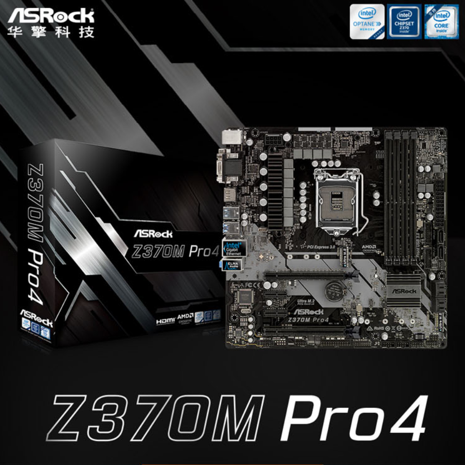

9600KF搭配丐中丐华擎Z370M Pro4的超频最廉价方案随笔
先说结论吧。华擎丐中丐Z370M Pro4主板很适合不带K仅超内存（4000以下低频）或者带K i3超频，比较适合9600K/KF，但重载掉压问题尤为严重。
我尝试将9600KF OC全核5G Ring4.7并锁1.4v，防掉压开到最高的Level1，进系统查看CPUZ却看到CPU电压待机极限是1.255V，孱弱的供电使它无法更高了，Ring4.8干脆进不了系统。运行调用AVX的R20跑分情况惨不忍睹，CPU主频会自动降低到4.3G和4.7G来回跳，电压1.05-1.1v，日常应用和游戏还没发现这个问题。游戏性能就不赘述了，之前zen2发布的时候对比里最突出的正是5G的9600K...一般跟9700k 9900k都没啥大差距。
总之，作为穷人臭打游戏快乐套餐，9600K/KF+华擎Z370M Pro4在当时（2019年8月）总价仅仅1700+600=2300，隔壁Zen2游戏性能对比5G Intel拉垮，多核优化不普及使得这套平台成为当前性价比最高的游戏平台，多加俩核的9700K得加700块，主板还得继续加钱，性能提升也不明显，把这预算加在显卡上岂不美哉？（暴论）